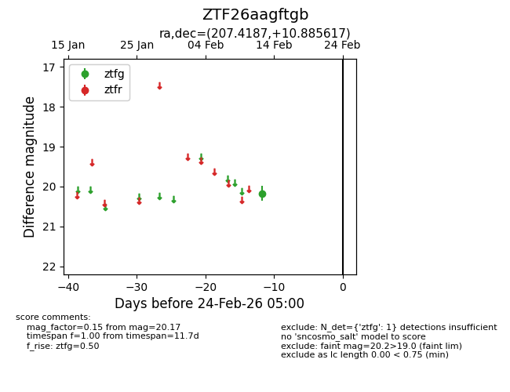
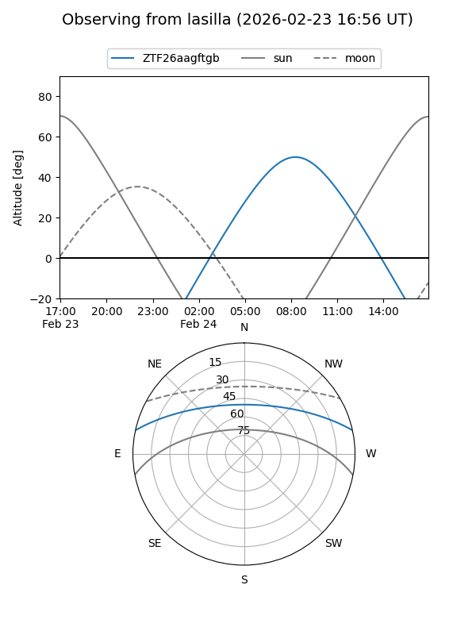
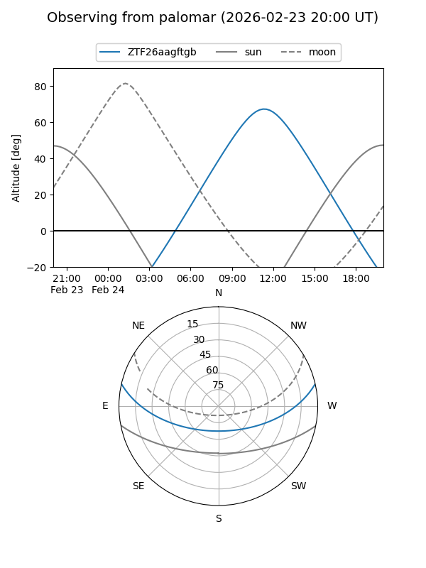

ZTF26aagftgb
Target ZTF26aagftgb at 2026-02-24 09:08
Aliases and brokers:
FINK: link
Lasair: link
ALeRCE: link
alt names
ZTF26aagftgb (ztf,fink_ztf)
Coordinates:
equatorial (ra, dec) = 207.4187,+10.88562
equatorial (HMS+DMS) = 13:49:40.48,+10:53:08.22
galactic (l, b) = (345.8667,+68.75211)
Flags:
Photometry:
last ztfg=20.17
1 ztfg detections
Lightcurve

Visibility


Additional plots